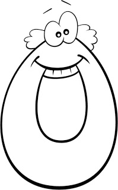
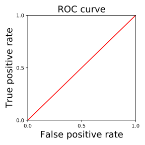
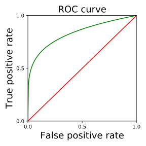
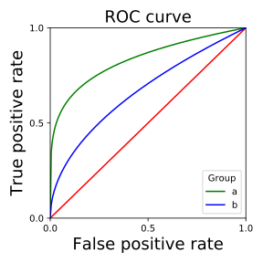

CS 294: Fairness in Machine Learning
Day 4: Intro to observational fairness criteria
Moritz Hardt

September 8, 2017
Observational fairness criteria
Many definitions
Trade-offs
Algorithms for achieving them
Impossibility results
Typical setup
$X$ features of an individual
$A$ sensitive attribute (race, gender, ...)
$C=C(X,A)$ classifier mapping $X$ and $A$ to some prediction
$Y$ actual outcome
Note: random variables in the same probability space
Notation: $\mathbb{P}_a\{E\}=\mathbb{P}\{E\mid A=a\}.$
All of this is a fragile abstraction
$X$ incorporates all sorts of measurement biases
$A$ often not even known, ill-defined, misreported, inferred
$C$ often not well defined, e.g., large production ML system
$Y$ often poor proxy of actual variable of interest
Observational criteria
Anything you can write down as a probability statement involving $X, A, C, Y.$
Questions we can ask
What can we learn from observational criteria?
How can we achieve them algorithmically?
How do these criteria trade-off?
How do these criteria shape public discourses?
Demographic parity
When $C$ is binary $0/1$-variables, this means
$\mathbb{P}_a\{C = 1\} = \mathbb{P}_b\{C = 1\}$ for all groups $a,b.$
Approximate versions:
Potential issues
Lazyness
Accept random people in group $a$ but qualified people in group $b.$
Can happen for lack of training data (recall sample size disparity)
Not optimality compatible
Rules out perfect classifier $C=Y$ when base rates are different: $\mathbb{P}_a\{C=1\}\ne\mathbb{P}_b\{C=1\}.$
How about accuracy parity?
$\mathbb{P}_a\{ C = Y \} = \mathbb{P}_b\{ C = Y \}$ for all groups $a,b$.
How about accuracy parity?
The good
Discourages laziness by equalizing error rates across groups.
Allows perfect predictor $C=Y.$
The bad
Error types matter!
Allows you to make up for rejecting qualified women by accepting unqualified men.
True positive parity
Assume $C$ and $Y$ are binary $0/1$-variables.
$\mathbb{P}_a\{ C = 1 \mid Y=1\} = \mathbb{P}_b\{ C = 1\mid Y=1\}$ for all groups $a,b$.
Called equal opportunity in H-Price-Srebro (2016).
Suitable when positive outcome ($1$) is desirable.
Equivalently, primary harm is due to false negatives.
False positive parity
Assume $C$ and $Y$ are binary $0/1$-variables.
$\mathbb{P}_a\{ C = 1 \mid Y=0\} = \mathbb{P}_b\{ C = 1\mid Y=0\}$ for all groups $a,b$.
TPP+FPP together called equalized odds in H-Price-Srebro (2016). We'll also call it positive rate parity.
In full generality, random variable $R$ satisifes equalized odds if $R$ is conditionally independent of $A$ given $Y.$
Predictive value parity
Assume $C$ and $Y$ are binary $0/1$-variables.
- positive predictive value parity if
for all groups $a,b$:
$\mathbb{P}_a\{ Y = 1 \mid C=1\} = \mathbb{P}_b\{Y = 1\mid C=1\}$ -
negative predictive value parity if
for all groups $a,b$:
$\mathbb{P}_a\{ Y = 1 \mid C=0\} = \mathbb{P}_b\{Y = 1\mid C=0\}$ - predictive value parity if it satisfies both of the above.
Why predictive value parity?
Equalizes chance of success given acceptance.
COMPAS: An observational debate
COMPAS: An observational debate
Probublica's main charge was observational.
Black defendants experienced higher false positive rate.
Northpointe's main defense was observational.
Scores satisfy precision parity.
Trade-offs are necessary
- positive rate parity fails, or
- predictive value parity fails.
Observed in very similar form by Chouldechova (2017).
Similar trade-off result for score functions due to Kleinberg, Mullainathan, Raghavan (2016)
Intuition
| Group | a | b | |
| Outcome |  | Unequal base rates |
|
| Predictor |
So far, predictor is perfect.
Let's introduce an error.
Intuition
| Group | a | b | |
| Outcome | Unequal base rates |
||
| Predictor |
But this doesn't satisfy false positive parity!
Let's fix that!
Intuition
| Group | a | b | |
| Outcome | Unequal base rates |
||
| Predictor |
Satisfies positive rate parity!
Intuition
| Group | a | b | |
| Outcome | Unequal base rates |
||
| Predictor | |||
| NPV | 2/5 | 1/3 |
Does not satisfy predictive value parity!
Show that predictive value parity fails.
Proof by googling the first Wiki entry on this:
$\mathrm{PPV_a} = \frac{\mathrm{TPR}p_a}{\mathrm{TPR}p_a+\mathrm{FPR}(1-p_a)}$
Hence, $\mathrm{PPV}_0=\mathrm{PPV}_1$ implies
either $\mathrm{TPR}=0$ or $\mathrm{FPR}=0.$
(But not both, since $C\ne Y$)
$\mathrm{NPV_a} = \frac{(1-\mathrm{FPR})(1-p_a)}{(1-\mathrm{TPR})p_a+(1-\mathrm{FPR})(1-p_a)}$
In either case, $\mathrm{NPV}_0\ne \mathrm{NPV}_1.$ Hence predictive value parity fails.
Score functions
Formally, any real-valued random variable $R\in[0,1]$ in the same probability space as $(X,A,Y)$.
Leads to family of binary classifiers by thresholding $C=\mathbb{I}\{R>t\}, t\in[0,1]$.
Different thresholds give different trade-offs between true and false positive rate.
Bayes optimal scores
Goal: Find $R$ that minimizes $\mathbb{E}(Y-R(X,A))^2$
Solution: $R=r(X, A),$ where $r(x, a)=\mathbb{E}[Y\mid X=x, A=a].$
Given score $R$, plot (TPR, FPR) for all possible thresholds


Deriving classifiers from scores
Given score $R$ and cost $c=(c_{fn}, c_{fp}),$
derive classifier $C=F(R, A)$ that minimizes cost
- subject to no constraints.
- subject to equalized odds.
- subject to equality of opportunity.
Deriving classifiers from scores
Construction on the board. See paper for details.
Optimality preservation
An optimal equalized odds classifier can be derived
from the Bayes optimal regressor.
There exists a derived equalized odds classifier $Y^*=F(R^*, A)$ that has minimal cost among all equalized odds classifiers.
Note: Approximate version of the theorem holds as well. See paper.
FICO credit scores
Based on sample of 301536 TransUnion TransRisk scores from 2003
(made
available by US Federal Reserve)
$R$ — Credit score ranging from 300 to 850
$Y$ — Default
Fineprint: failed to pay debt for at least $90$
days on at least one account
$A$ — Race (Asian, Black, Hispanic, White)